Chapter 8: Inference for Proportions
Expanded from Statistics_Chapter8_Inference_for_Proportions.pdf (10 pages)
1. Sampling Distribution & Confidence Intervals for a Single Proportion
When we collect data on a categorical variable (or binary classification outcome in machine learning and A/B testing), our raw data consist of counts and percentages rather than continuous measurements. If $X$ is the count of "successes" (the outcome of interest) in a Simple Random Sample (SRS) of size $n$, the parameter of interest is the unknown population proportion $p$, and the statistic used to estimate $p$ is the sample proportion:
In Case 8.1 (Examples 8.1 & 8.2 — Adults and Video Games), a Pew Research Center survey asked a nationally representative sample of $n = 2054$ U.S. adults aged 18 and older whether they play video games; $X = 1063$ responded "Yes," yielding the sample proportion:
Sampling Distribution of a Sample Proportion $\hat{p}$
Choose an SRS of size $n$ from a large population that contains population proportion $p$ of successes. Let $X \sim B(n, p)$ be the count of successes and $\hat{p} = X / n$. Since $\mu_X = np$ and $\sigma_X = \sqrt{np(1 - p)}$ (from Chapter 5), dividing by $n$ gives:
- Shape: For large sample sizes $n$, the sampling distribution of $\hat{p}$ is approximately Normal.
- Mean: $\mu_{\hat{p}} = \frac{np}{n} = p$ (so $\hat{p}$ is an unbiased estimator of $p$).
- Standard Deviation: $$\sigma_{\hat{p}} = \frac{\sqrt{np(1 - p)}}{n} = \sqrt{\frac{p(1 - p)}{n}}$$
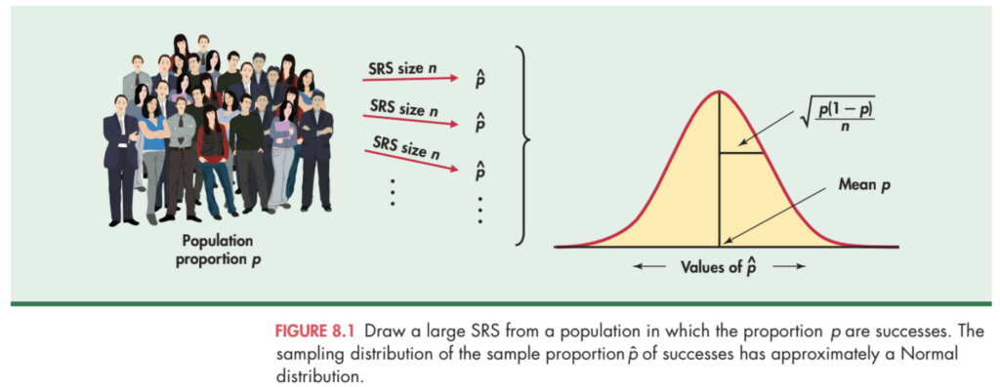
Large-Sample Confidence Interval for $p$
Notice that the theoretical standard deviation $\sigma_{\hat{p}} = \sqrt{p(1 - p)/n}$ depends on the very parameter $p$ that we are trying to estimate! To construct a confidence interval, we replace $p$ with the sample proportion $\hat{p}$ to obtain the standard error of $\hat{p}$:
Large-Sample $z$ Confidence Interval for a Population Proportion
where $z^*$ is the upper $(1 - C)/2$ critical value of the standard Normal distribution ($z^* = 1.645$ for $90\%$, $1.960$ for $95\%$, and $2.576$ for $99\%$).
Sample-Size Rule of Thumb: Use this interval for $90\%, 95\%,$ or $99\%$ confidence when both the number of successes $X = n\hat{p} \ge 15$ and the number of failures $n - X = n(1 - \hat{p}) \ge 15$.
Worked Example 8.3: 95% Confidence Interval for Adult Video Game Players
In Case 8.1, $n = 2054$ and $X = 1063$ (both $X = 1063 \ge 15$ and $n - X = 991 \ge 15$ easily satisfy the rule of thumb). We compute:
We are $95\%$ confident that between $50\%$ and $54\%$ of U.S. adults play video games.
The Plus Four (Wilson / Agresti–Coull) Confidence Interval
Why does the standard large-sample interval $\hat{p} \pm z^*\sqrt{\hat{p}(1-\hat{p})/n}$ perform poorly when $n$ is small or when $p$ is close to $0$ or $1$? Consider an extreme example: suppose we test $n = 12$ components and observe $X = 0$ failures. Then $\hat{p} = 0/12 = 0$, which makes $SE_{\hat{p}} = \sqrt{0(1)/12} = 0$ and gives the absurd confidence interval $0 \pm 0 = [0, 0]$!
We can dramatically improve coverage accuracy by shrinking $\hat{p}$ slightly away from the boundaries $0$ and $1$ toward $0.5$. Because $z^* \approx 2$ for a $95\%$ interval (so $(z^*)^2 \approx 4$ and $(z^*)^2/2 \approx 2$), Edwin Bidwell Wilson's score interval simplifies to the remarkably clean Plus Four method (popularized by Alan Agresti and Brent Coull):
The Plus Four Confidence Interval for a Single Proportion
Act as if you had 4 additional observations, 2 of which are successes and 2 of which are failures. The new sample size is $n + 4$, the new success count is $X + 2$, and the Plus Four (Wilson) estimate of $p$ is:
Rule of Thumb: You can use the Plus Four interval whenever the sample size is at least $n \ge 10$ and the confidence level $C$ is $90\%, 95\%,$ or $99\%$ — regardless of how small or large $X$ is (even when $X = 0$!).
View Original Handwritten Notes — Pages 1, 2 & 3 (Sampling Distribution of $\hat{p}$ & Plus Four Interval)
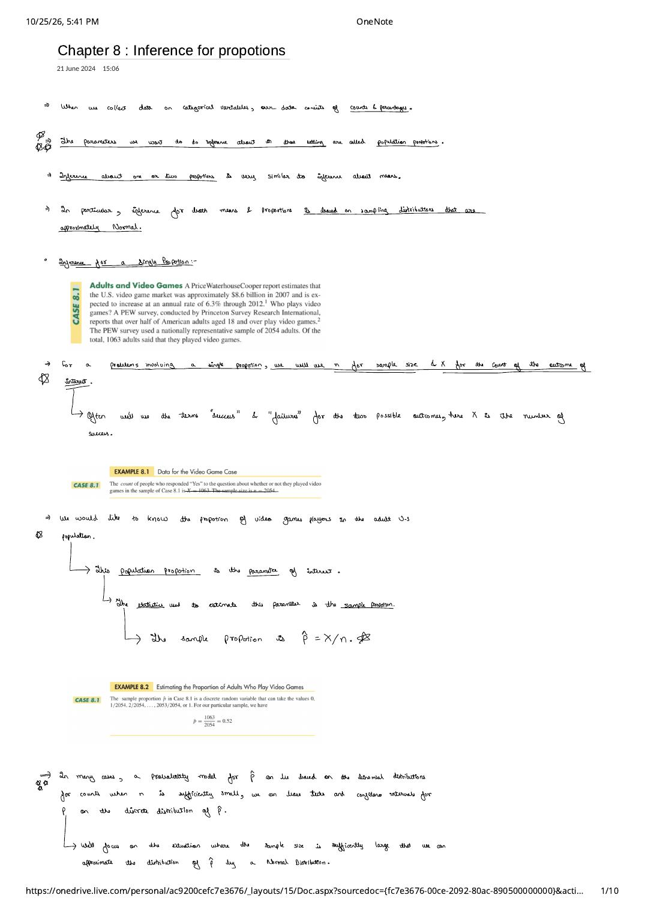
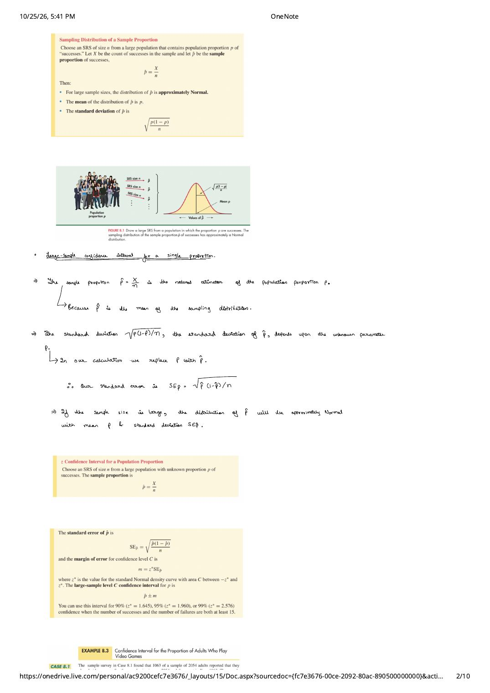
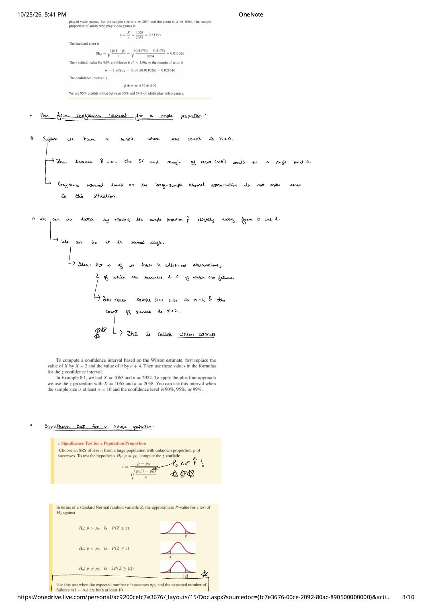
2. Significance Test for a Single Proportion & Sample Size Planning
To test the null hypothesis $H_0: p = p_0$, we standardize $\hat{p} - p_0$. Notice a critical distinction between the confidence interval and the significance test:
Crucial Distinction: Use $p_0$ (Not $\hat{p}$!) in the Test Statistic Denominator
When computing a confidence interval, we have no hypothesized value for $p$, so we must estimate the standard deviation using $SE_{\hat{p}} = \sqrt{\hat{p}(1 - \hat{p})/n}$. When performing a significance test of $H_0: p = p_0$, however, we compute the test statistic under the assumption that $H_0$ is true ($p = p_0$). Therefore, we plug the known null value $p_0$ directly into the denominator!
One-Sample $z$ Test for a Population Proportion ($H_0: p = p_0$)
In terms of a standard Normal random variable $Z \sim N(0, 1)$, the $P$-value is:
- $H_a: p > p_0 \implies P(Z \ge z)$
- $H_a: p < p_0 \implies P(Z \le z)$
- $H_a: p \ne p_0 \implies 2\,P(Z \ge |z|)$
Rule of Thumb: Use this test when the expected number of successes $np_0 \ge 10$ and the expected number of failures $n(1 - p_0) \ge 10$.
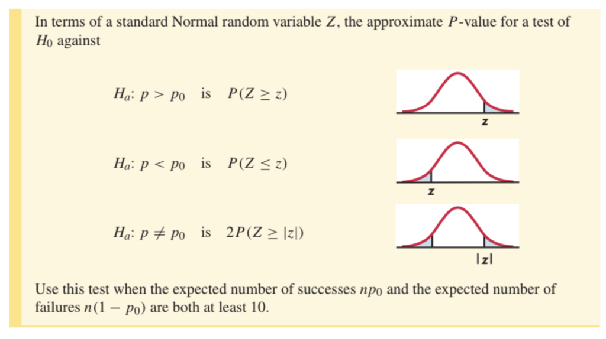
Worked Example 8.4: Comparing Two Sun Block Lotions ($n = 20$)
Your company produces a UVA/UVB sun block lotion and hires an independent lab to compare it against your major competitor's lotion on the backs of $n = 20$ subjects (a paired comparison on each subject). Your lotion provided better protection for $X = 13$ of the $20$ subjects ($\hat{p} = 13/20 = 0.65$), while the competitor's was better for $7$. Can you support an advertising claim of superiority?
- Why $H_a$ Must Be Two-Sided: Before seeing the data, either lotion could have performed better. Thinking or hoping that your product is superior cannot be used to justify a one-sided test! Thus we test: $$H_0: p = 0.5 \quad \text{vs.} \quad H_a: p \ne 0.5$$
- Check Rule of Thumb & Compute $z$: Expected counts under $H_0$ are $np_0 = 20(0.5) = 10 \ge 10$ and $n(1 - p_0) = 10 \ge 10$. The test statistic is: $$z = \frac{0.65 - 0.50}{\sqrt{\dfrac{0.5(0.5)}{20}}} = \frac{0.15}{0.11180} = 1.34$$
- Two-Sided $P$-Value: From the standard Normal table, $P(Z \ge 1.34) = 1 - 0.9099 = 0.0901$, so the two-sided $P$-value is $P = 2(0.0901) = 0.1802$. Because $P = 0.18$ is large, the data are compatible with no difference ($p = 0.5$) and do not support a superiority claim.
Choosing a Sample Size $n$ for a Desired Margin of Error $m$
Suppose we want to plan a survey or evaluation study so that our level $C$ confidence interval for $p$ has a margin of error no larger than $m$. Setting $m = z^* \sqrt{p^*(1 - p^*)/n}$ and solving for $n$ yields:
Sample Size Formula for Estimating a Population Proportion
Because we do not know $\hat{p}$ before collecting the data, there are two ways to choose the guessed value $p^*$:
- Informed Guess ($p^*$ from Pilot or Prior Study): Use a sample proportion from a pilot study or previous survey if you are confident $p$ lies in a known range (e.g., $p < 0.3$ or $p > 0.7$).
- Conservative Worst-Case Bound ($p^* = 0.5$): Because the function $f(p) = p(1 - p)$ attains its maximum value $\frac{1}{4} = 0.25$ at $p = 0.5$, setting $p^* = 0.5$ gives the largest possible margin of error and guarantees your actual margin of error will be $\le m$ regardless of the true value of $p$: $$\text{Worst-case sample size } (p^* = 0.5): \qquad n = \left(\frac{z^*}{2m}\right)^2$$
Worked Examples 8.5 & 8.6: Customer Satisfaction Survey & Margin-of-Error Sensitivity
Example 8.5 (Planning a Customer Survey): A company wants to estimate the proportion $p$ of satisfied customers with $95\%$ confidence ($z^* = 1.96$) using the conservative choice $p^* = 0.5$:
- For a $\pm 3\%$ margin of error ($m = 0.03$): $n = \left[\frac{1.96}{2(0.03)}\right]^2 = 1067.1 \implies \mathbf{n = 1068}$ (always round up!).
- For a $\pm 2.5\%$ margin of error ($m = 0.025$): $n = \left[\frac{1.96}{2(0.025)}\right]^2 = 1536.6 \implies \mathbf{n = 1537}$.
- For a $\pm 2\%$ margin of error ($m = 0.02$): $n = \left[\frac{1.96}{2(0.02)}\right]^2 = 2401.0 \implies \mathbf{n = 2401}$.
Case 8.2 / Example 8.6 (Marketing Christmas Trees, $n = 500$): A survey of $n = 500$ Indiana households has $95\%$ margin of error $m = 1.96\sqrt{\hat{p}(1 - \hat{p})/500}$. Inspecting $m$ across all values of $\hat{p}$ reveals two fundamental properties:
| $\hat{p}$ | $0.05$ | $0.10$ | $0.20$ | $0.30$ | $0.40$ | $0.50$ | $0.60$ | $0.70$ | $0.80$ | $0.90$ | $0.95$ |
|---|---|---|---|---|---|---|---|---|---|---|---|
| $95\%$ Margin $m$ | $0.019$ | $0.026$ | $0.035$ | $0.040$ | $0.043$ | $0.044$ | $0.043$ | $0.040$ | $0.035$ | $0.026$ | $0.019$ |
- Symmetry around $0.50$: The margin of error for $\hat{p}$ and $1 - \hat{p}$ is identical (e.g., $\hat{p} = 0.05$ and $\hat{p} = 0.95$ both give $m = 0.019$) because $\hat{p}(1 - \hat{p})$ is symmetric in successes and failures.
- Flatness near the peak: As $\hat{p}$ varies all the way from $0.30$ to $0.70$, the margin of error barely changes ($0.040$ to $0.044$). Only when $\hat{p} < 0.3$ or $\hat{p} > 0.7$ does $p^* = 0.5$ substantially overestimate the required sample size.
View Original Handwritten Notes — Page 4 (Example 8.4 & Sample Size Formula)
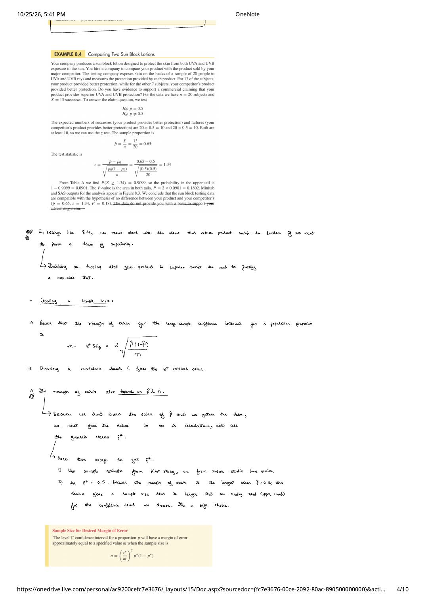
3. Comparing Two Proportions: Confidence Intervals for $p_1 - p_2$
Suppose we want to compare the population proportions $p_1$ and $p_2$ of successes in two groups (such as a treatment group vs. control group, or two demographic populations) using two independent SRSs of sizes $n_1$ and $n_2$:
| Population | Population Proportion | Sample Size | Count of Successes | Sample Proportion |
|---|---|---|---|---|
| 1 | $p_1$ | $n_1$ | $X_1$ | $\hat{p}_1 = X_1 / n_1$ |
| 2 | $p_2$ | $n_2$ | $X_2$ | $\hat{p}_2 = X_2 / n_2$ |
We estimate $p_1 - p_2$ by the difference between the sample proportions, $D = \hat{p}_1 - \hat{p}_2$. Because the two samples are independent, their variances add:
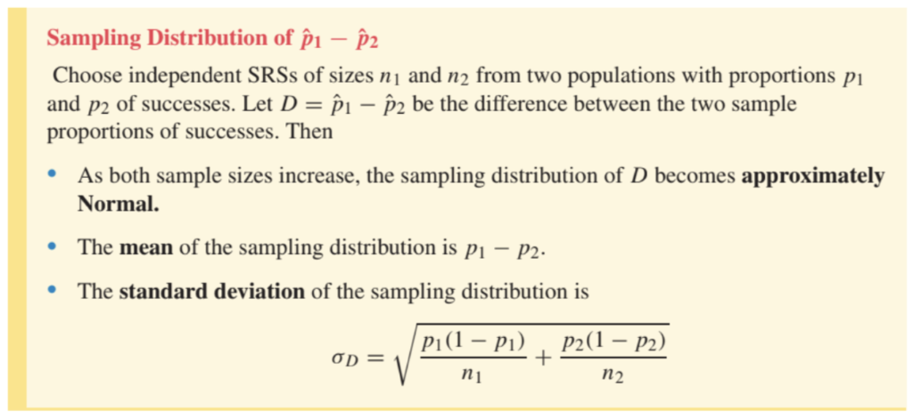
Large-Sample & Plus Four Confidence Intervals for $p_1 - p_2$
- Large-Sample $z$ Interval for $p_1 - p_2$: Replace $p_1, p_2$ with $\hat{p}_1, \hat{p}_2$: $$SE_D = \sqrt{\frac{\hat{p}_1(1 - \hat{p}_1)}{n_1} + \frac{\hat{p}_2(1 - \hat{p}_2)}{n_2}}, \qquad (\hat{p}_1 - \hat{p}_2) \pm z^* SE_D$$ Rule of Thumb: Use when the counts of successes and failures $X_1, n_1 - X_1, X_2, n_2 - X_2$ in both samples are all at least $10$.
- Plus Four Confidence Interval for $p_1 - p_2$: Add $4$ imaginary observations ($2$ successes and $2$ failures) divided equally between the two samples — that is, add $1$ success and $1$ failure to each sample: $$\tilde{p}_1 = \frac{X_1 + 1}{n_1 + 2}, \qquad \tilde{p}_2 = \frac{X_2 + 1}{n_2 + 2}, \qquad SE_{\tilde{D}} = \sqrt{\frac{\tilde{p}_1(1 - \tilde{p}_1)}{n_1 + 2} + \frac{\tilde{p}_2(1 - \tilde{p}_2)}{n_2 + 2}}$$ Rule of Thumb: Use whenever both sample sizes are at least $n_1 \ge 5$ and $n_2 \ge 5$ for $90\%, 95\%,$ or $99\%$ confidence.
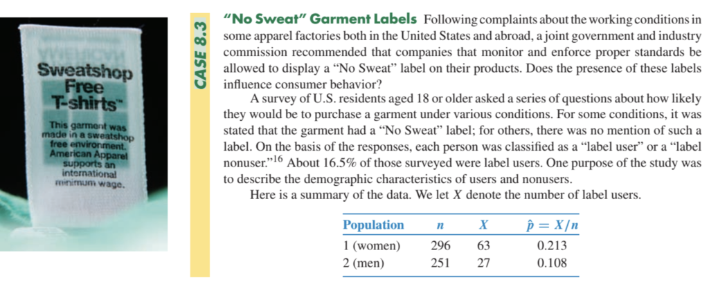
Worked Example 8.7: Gender Differences in "No Sweat" Label Use
From Case 8.3, $\hat{p}_1 = \frac{63}{296} = 0.2128 \approx 0.213$ (women) and $\hat{p}_2 = \frac{27}{251} = 0.1076 \approx 0.108$ (men). All four counts of successes and failures ($63, 233, 27, 224$) exceed $10$. We compute a $95\%$ confidence interval for $p_1 - p_2$:
With $95\%$ confidence, the proportion of women who use "No Sweat" garment labels exceeds that of men by between $4\%$ and $16\%$ (about $10.5\%$ higher with a $\pm 6\%$ margin of error).
View Original Handwritten Notes — Pages 6 & 7 (Comparing Two Proportions & Example 8.7)
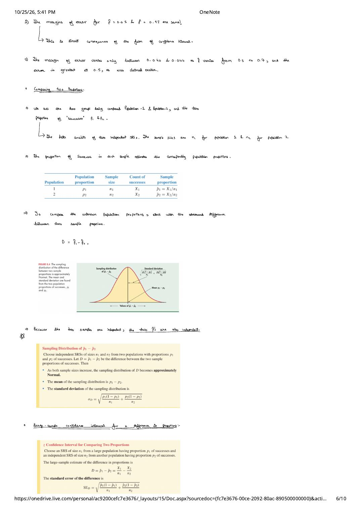
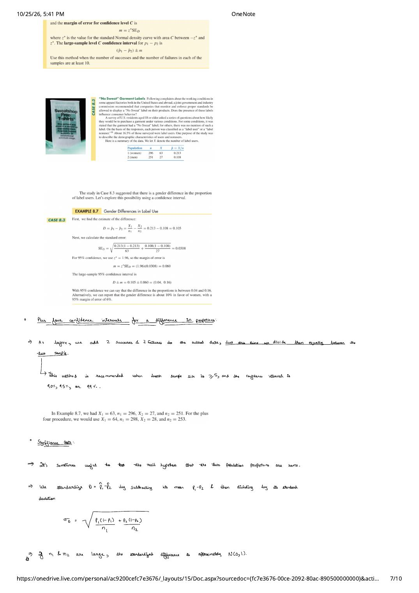
4. Pooled Two-Sample $z$ Test & Relative Risk ($RR$)
Now suppose we want to test the null hypothesis that the two population proportions are equal:
Under $H_0$, both populations share a single common success probability $p_1 = p_2 = p$, so the variance of $D = \hat{p}_1 - \hat{p}_2$ factors neatly:
What is the best estimate of this common proportion $p$ under $H_0$? Rather than estimating $p_1$ and $p_2$ separately, we combine both samples and compute the overall proportion of successes across all $n_1 + n_2$ observations — the pooled sample proportion $\hat{p}$:
Significance Test for Comparing Two Proportions (Pooled $z$ Test)
To test $H_0: p_1 = p_2$, first compute the pooled estimate of the common proportion $p$:
Then compute the pooled standard error $SE_{Dp}$ and the two-sample $z$ statistic:
Rule of Thumb: Use this test when the counts of successes and failures ($X_1, n_1 - X_1, X_2, n_2 - X_2$) in each of the two samples are at least $5$.
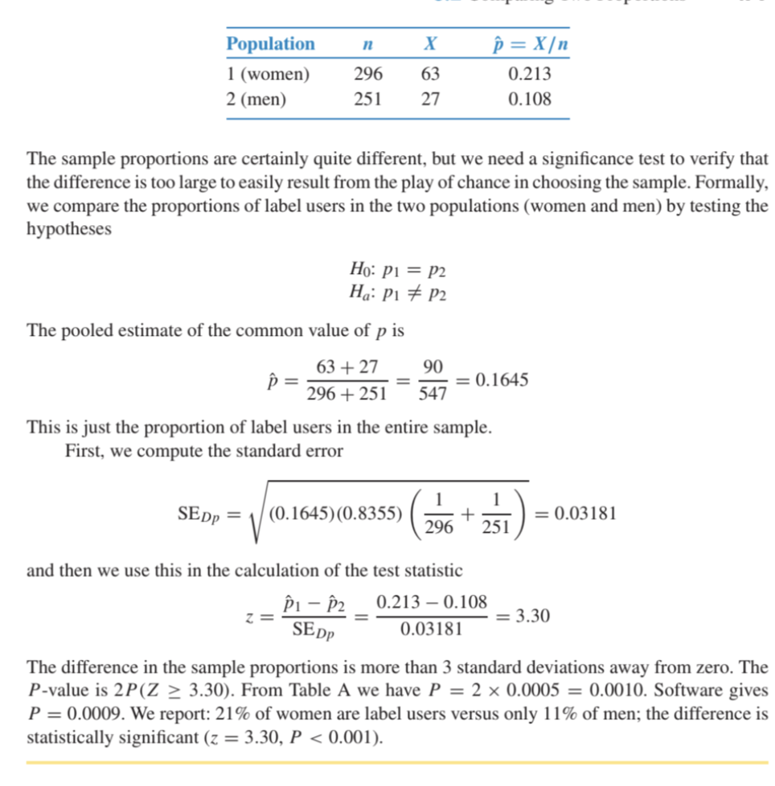
Worked Example 8.8: Testing Men, Women, and Garment Labels ($H_0: p_1 = p_2$)
Using the Case 8.3 garment label data ($n_1 = 296, X_1 = 63, \hat{p}_1 = 0.2128$ and $n_2 = 251, X_2 = 27, \hat{p}_2 = 0.1076$), we test $H_0: p_1 = p_2$ against $H_a: p_1 \ne p_2$:
There is strong evidence ($z = 3.30, P < 0.001$) that women and men differ in the rate at which they use "No Sweat" garment labels ($21.3\%$ vs. $10.8\%$).
Beyond the Basics: Relative Risk ($RR$)
Up to now we have compared two proportions by their additive difference $\hat{p}_1 - \hat{p}_2$. In medical research, epidemiology, and risk analysis — especially when $p_1$ and $p_2$ are small — it is often much more informative to compare two proportions by their ratio, called the Relative Risk ($RR$):
Relative Risk ($RR$)
A relative risk of $RR = 1$ corresponds to equal proportions ($p_1 = p_2$, no difference in risk between the two groups). A confidence interval for the population relative risk $p_1 / p_2$ that excludes $1$ provides statistically significant evidence that the two population risks differ.
Worked Examples 8.9 & 8.10: Interpreting Relative Risk & Confidence Intervals
- Example 8.9 (Relative Risk of Using Garment Labels): For women ($\hat{p}_1 = 0.2128$) relative to men ($\hat{p}_2 = 0.1076$): $$RR = \frac{0.2128}{0.1076} = 1.98$$ Software (`PROC FREQ` in SAS) gives a $95\%$ confidence interval for the population relative risk of $(1.30, \; 3.01)$. Women are nearly twice as likely as men to use garment labels ($95\%$ CI: $1.30$ to $3.01$ times as likely).
- Example 8.10 (Smoking and Colorectal Cancer Meta-Analysis): A meta-analysis combined $26$ studies comparing colorectal cancer mortality in ever-smokers (Population 1) vs. never-smokers (Population 2), reporting a combined relative risk of $RR = 1.18$ with a $95\%$ confidence interval of $(1.11, \; 1.25)$. Because this interval does not include the null value $RR = 1.00$, we conclude that cigarette smoking significantly increases colorectal cancer risk: the estimated increase in risk is $18\%$, with a $95\%$ confidence interval from $11\%$ to $25\%$.
View Original Handwritten Notes — Pages 8 & 9 (Pooled Estimate $\hat{p}$, $SE_{Dp}$ & Relative Risk)
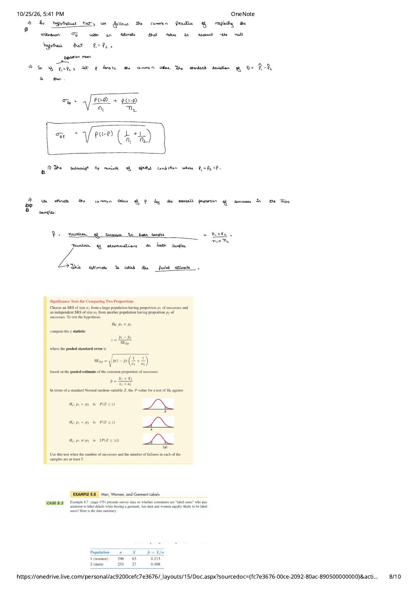
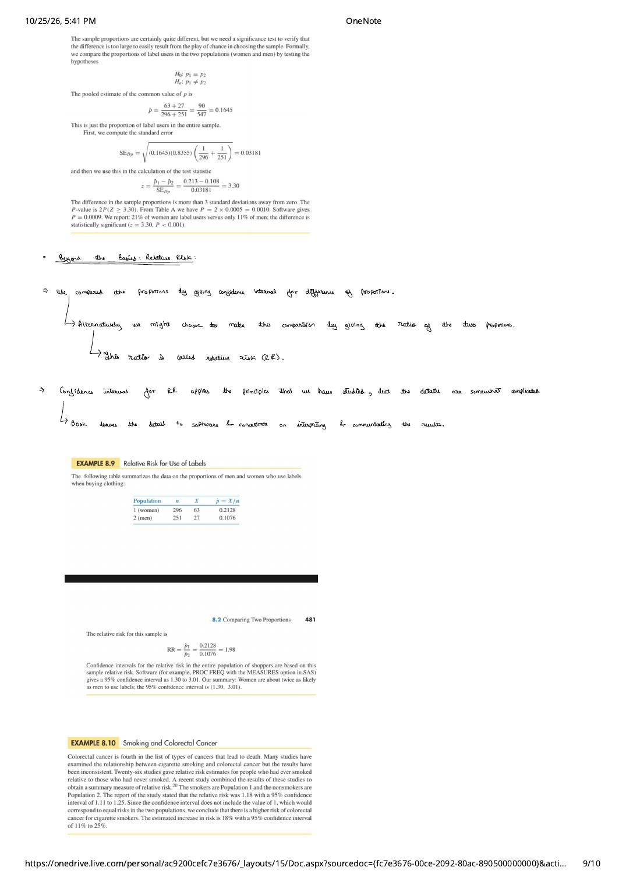